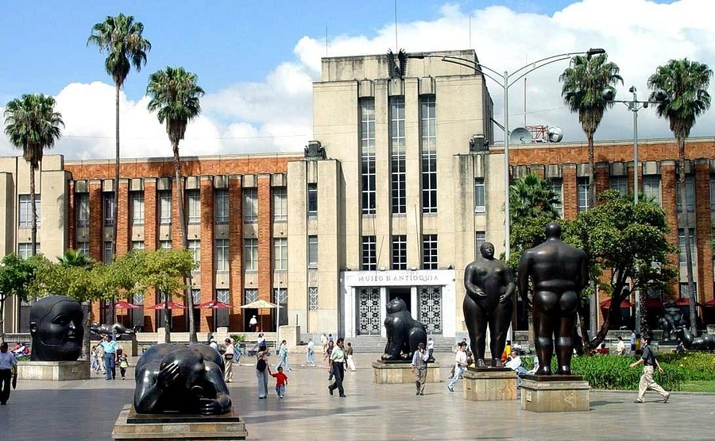
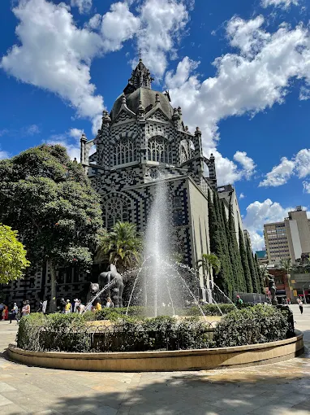

Antioquia Departamento de Colombia
Informacion📄
Antioquia es un departamento del noroeste de Colombia, que se sitúa en su mayor parte en la cordillera de los Andes y se extiende hacia el mar Caribe. En el centro del valle de Aburrá, la capital departamental, Medellín, alberga el imponente Museo de Antioquia.
Sitios Turisticos 📌
-
Museo de Antioquia

El Museo de Antioquia, antiguo Palacio Municipal, es un museo situado en el centro de Medellín que alberga colecciones con relevancia internacional. Fue el primero fundado en el departamento de Antioquia y el segundo en Colombia.
-
Plaza Botero

La Plaza Botero es un espacio de arte al aire libre en el centro de Medellín, inaugurado en 2001-2002, que alberga 23 esculturas monumentales de bronce donadas por el maestro Fernando Botero, un artista oriundo de Medellín.
-
Piedra del Peñol

La Piedra del Peñol, también conocida como el Peñón de Guatapé, es un enorme monolito de granito en Antioquia, Colombia, que ofrece vistas espectaculares desde su cima tras ascender sus más de 700 escalones. Esta maravilla natural es un importante destino turístico, con opciones de comida y artesanías en su base y cima.
Economia📈
La economía de Antioquia es una de las más fuertes de Colombia, siendo un motor importante del país con gran diversidad de sectores como la minería (oro, platino), el sector agropecuario (café, leche, plátano, flores), la industria (cemento, textil y moda) y los servicios. La región aporta una parte significativa del Producto Interno Bruto (PIB) nacional y es un centro importante de producción y exportación de bienes con valor agregado.
Formacion ocupacional📋
- Industria:
Antioquia tiene una fuerte vocación industrial, particularmente en los sectores de textil, moda y cemento. Las oportunidades de formación se enfocan en el diseño de modas, la producción de confecciones y la manufactura de cemento.
- Minería y energía:
El departamento es líder en la extracción de oro y tiene un gran potencial en energía hidroeléctrica. Se requieren técnicos y profesionales en exploración, explotación y procesamiento de minerales, así como en la operación y mantenimiento de plantas hidroeléctricas.
- Sector agropecuario:
Se destacan la producción de café, banano, flores y productos lácteos. La formación en este sector incluye gestión de fincas, técnicas de cultivo, procesamiento y comercialización de productos agrícolas.
Platos tipicos de Antioquia🥩
-
Bandeja Paisa

La bandeja paisa es un plato tradicional y abundante de la región antioqueña de Colombia, que consta de diez alimentos distintos servidos juntos en una bandeja grande: frijoles rojos, arroz blanco, carne molida, chicharrón (costilla de cerdo), chorizo, plátano maduro frito, arepa, huevo frito, aguacate y hogao (un sofrito de cebolla y tomate).
-
Mondongo Paisa

El mondongo se refiere tanto a una víscera de res, específicamente el estómago (callos), como a un plato de sopa tradicional hecho con esta víscera y otros ingredientes como carnes, verduras y tubérculos, muy popular en Colombia, otros países de Latinoamérica y el Caribe.
-
Frijoles Paisas

Es un embutido de pasta gruesa y ahumado. Elaborado con carne de cerdo, mezcladas con ingredientes y aditivos de uso permitido y embutidos en tripas de colágeno naturales de 30 mm de diámetro.